O que foi feito no sistema nesta semana
Semana de 18/10 a 24/10/2026 · CRM GMP Industriais
O almoxarifado ganhou a entrega de EPI e o empréstimo de ferramenta com assinatura na tela, uma fila de separação que diz de onde pegar cada item, e o pedido de compra passou a poder ser feito para uma OS. A Frota ganhou o portal do motorista no celular e, para o gestor, perfis de acesso, relatórios com total e o tratamento das pendências. Por baixo, as datas deixaram de pular para o dia seguinte depois das 21h, a proposta passou a guardar exatamente o que aparece na tela e cada pessoa passou a ver só os dados da sua área. Foram cerca de 88 horas de trabalho, a maior parte nas datas e horas do sistema inteiro, no acesso por área e nas listas e buscas.
O que você já pode ver na tela
Entrega de EPI e empréstimo de ferramenta com assinatura na tela
Onde: Almoxarifado → Entrega de EPI (tela nova, para o almoxarife e o administrador do almoxarifado) e Almoxarifado → Ferramentas → botão Emprestar.
Antes: a entrega de EPI era só no papel: o sistema não sabia quem recebeu o quê, e o material não tinha o número do CA. No empréstimo de ferramenta, o nome do colaborador era digitado à mão e nada provava quem levou.
Agora: o almoxarife escolhe o colaborador na lista do cadastro; o colaborador assina no quadro da tela e digita a própria matrícula. Na entrega de EPI, o estoque baixa sozinho, e EPI sem CA ou com CA vencido não sai (o cadastro do material ganhou Nº do CA e Validade do CA). A Ficha por colaborador sai em PDF com a assinatura de cada entrega, a confirmação da matrícula e o aparelho usado. No empréstimo, o colaborador lê o termo de responsabilidade antes de assinar, e cada empréstimo tem o botão Termo para ver e baixar o PDF. Se alguém alterar o registro ou a assinatura depois, o botão Verificar integridade acusa. Por quê: tirar a entrega de EPI do papel com uma prova confiável, como pede a NR-6, e dar um responsável assinado para cada ferramenta emprestada.
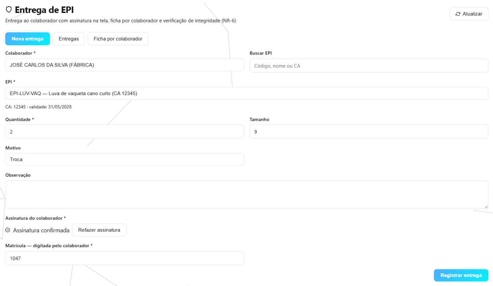
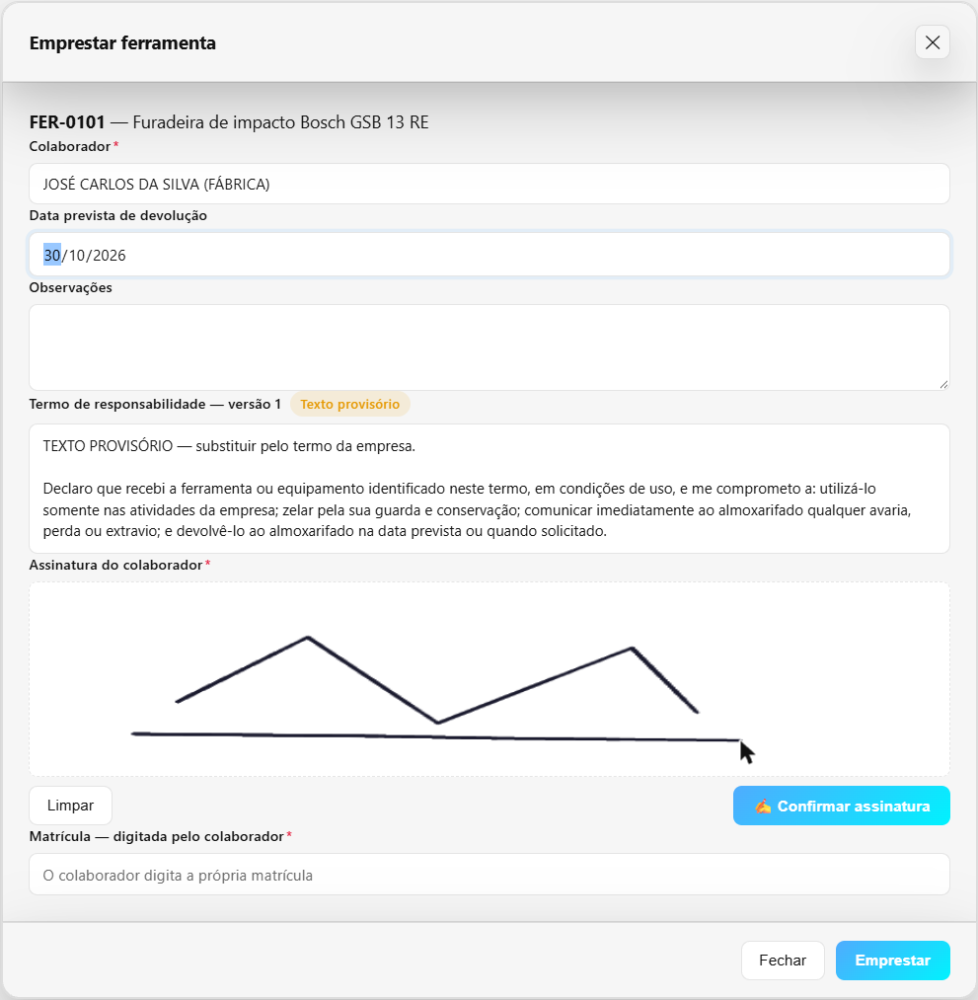
Ferramentas: editar, voltar da manutenção e dar baixa
Onde: Almoxarifado → Ferramentas.
Antes: ferramenta cadastrada com erro não se corrigia pela tela. Ao concluir a manutenção, ela voltava sempre a Disponível, mesmo sem conserto.
Agora: toda ferramenta tem o botão Editar. Ao concluir a manutenção, informa-se a condição do item e o destino: volta ao uso ou Baixa (descarte), com o motivo. Uma baixa feita por engano se desfaz em Reverter baixa. A ferramenta que voltou em uso com restrição mostra a restrição na lista, e o Emprestar avisa antes de entregar. Ferramenta baixada não é mais calibrada nem editada.
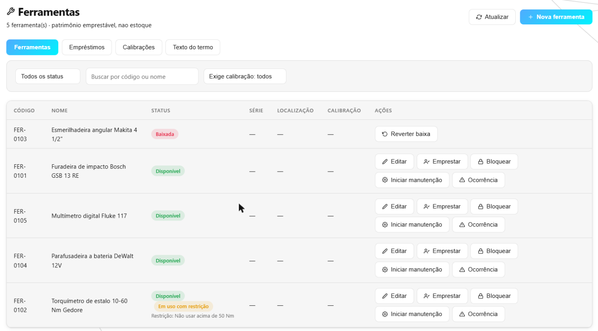
Separação: de onde pegar, em que ordem andar, e a caixa parada no balcão
Onde: Almoxarifado → Fila de separação; Almoxarifado → Alertas e Almoxarifado → Configurações → Gerais.
Antes: a fila dizia o que separar, não onde. O almoxarife procurava o endereço de cabeça, e a janela de separação abria em “Qualquer endereço”. Depois de separada, a caixa podia ficar dias parada no balcão sem ninguém ser cobrado.
Agora: cada item diz “Pegar em (endereço) — lote (vence em…)”, sem sugerir endereço bloqueado, lote vencido ou material já separado para outra requisição. Cada requisição traz a Ordem de coleta numerada pelo caminho do almoxarifado, a janela de separação já abre no endereço sugerido, e dá para imprimir a lista de coleta, de uma requisição ou de todas, com caixinha de OK para levar à prateleira. Na tela de Alertas, o cartão Separado aguardando retirada lista as requisições prontas há mais dias do que o combinado, e a lista de e-mails de alertas recebe o aviso. O número de dias fica em Alerta de Retirada Parada (dias); vem com 3.
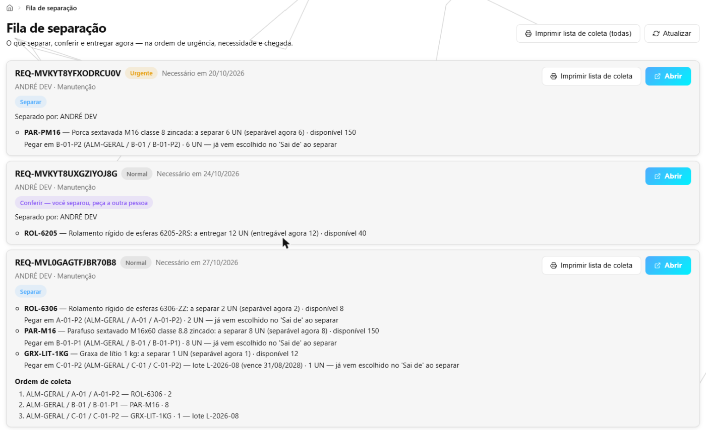
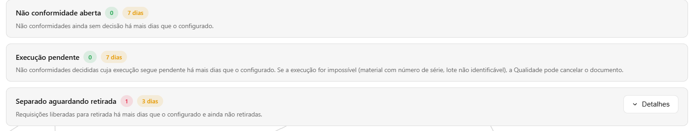
Compras: o pedido feito para uma OS, e o fornecedor novo sem sair do pedido
Onde: Compras → Pedidos de Compra → Novo Pedido (campo OS e tecla F2); também em Cotações, Fornecedores homologados, Almoxarifado → Recebimentos e Solicitar Material.
Antes: não havia onde dizer para qual trabalho era a compra. Quando a nota chegava, o material entrava livre e a primeira requisição de qualquer trabalho levava. E um fornecedor fora da lista obrigava a sair do pedido, cadastrá-lo em Fornecedores, voltar e refazer o pedido.
Agora: o pedido de compra tem o campo OS, e a lista de pedidos mostra a coluna OS. O que chega fica reservado para aquela OS, e a requisição dela é atendida primeiro; cancelar ou concluir a OS devolve o material ao estoque. O recebimento sem pedido também aceita a OS (material do cliente para industrialização), a requisição pode escolher a OS na lista em vez de digitar o número, e o relatório Consumo por OS passou a mostrar o que foi entregue, o que voltou e o líquido. Para o fornecedor novo, a tecla F2 ou o botão + Novo fornecedor abre a ficha completa por cima; ao salvar, ele já fica escolhido, e os itens, preços e condições continuam como estavam.
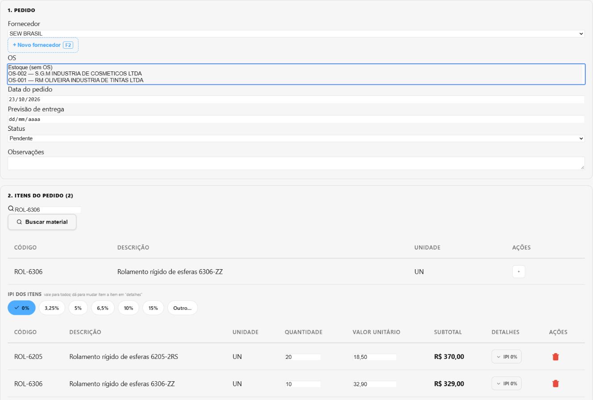
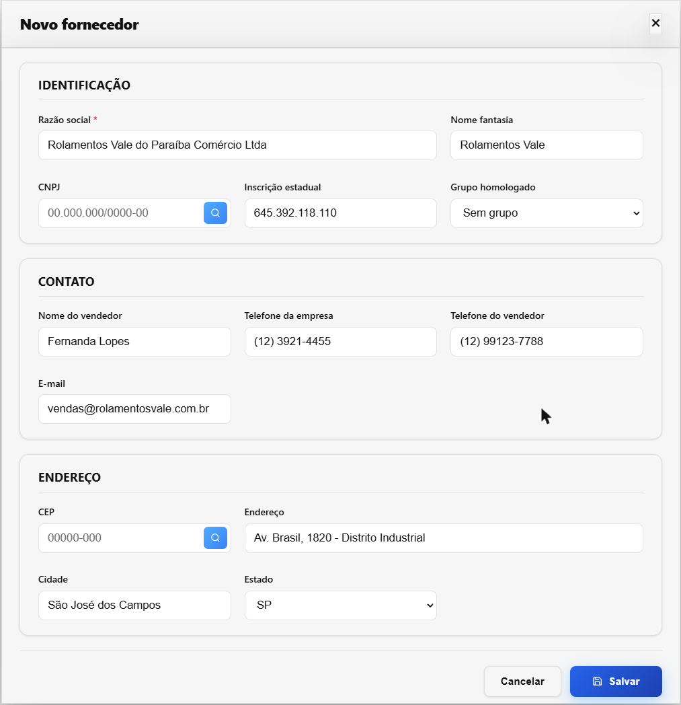
Validade do lote na Entrada manual
Onde: Almoxarifado → Movimentações → Entrada.
Antes: não havia onde informar a validade. O lote ficava sem data e, por isso, nunca vencia, não aparecia no e-mail de “lote vencendo” e ficava por último na ordem de quem vence antes sai antes.
Agora: com o lote preenchido, aparece o campo Validade do lote. O lote novo nasce com a data; o lote antigo sem data passa a tê-la, com um aviso. Se a data informada for diferente da que o lote já tem, a entrada é recusada e a tela diz qual data está gravada.
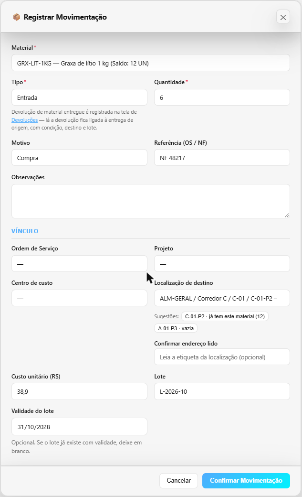
Frota: o motorista registra pelo celular, e o gestor fecha o ciclo
Onde: Frota → Portal do motorista (para o motorista, aparece como Meu painel).
Antes: o motorista preenchia o formulário de papel (saída, retorno e inspeção) e alguém passava a limpo na planilha.
Agora: o motorista registra pelo celular, numa tela de uma coluna com botões grandes: KM, data e horário (já vêm com o de agora), combustível em cinco botões, os 12 itens da inspeção com OK, N/A ou Falha, e as avarias. O registro só é salvo com os 12 itens respondidos. Na saída, o veículo em uso não aparece; no retorno, o veículo já é o da viagem aberta. Abastecimentos também entram por ali, e Meus registros mostra o que ele lançou. O motorista vê só o que é dele; o gestor continua vendo tudo, com a situação de cada checklist (OK, pendência ou incompleto) e o botão Exportar planilha em Relatórios, no formato da planilha de controle.
O formulário também passou a mostrar o último km registrado do veículo. Se o motorista digita um número menor (900 em vez de 1.900), a tela avisa e pergunta antes de salvar. Na empilhadeira, que se mede por horas, o campo vira Horímetro atual. Na avaria e no abastecimento, o botão Tirar foto guarda até 3 fotos junto do lançamento, em vez de mandar pelo WhatsApp. Por quê: um km errado estragava a conta de consumo, e a foto solta se perdia.
Para o gestor:
Frota → Perfis de acesso (tela nova): para cada pessoa, escolhe-se Consulta (vê o painel, as listas e os relatórios, sem gravar nada) ou Motorista. Antes, quem só acompanhava a frota caía no painel do motorista, ou precisava virar administrador.
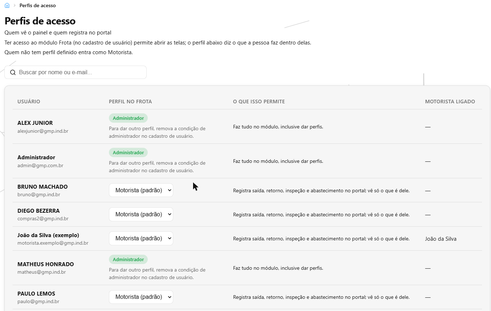
Frota → Checklist Diário: quando o motorista marca uma falha (freio, pneu), o gestor toca Tratar pendência e escreve o que foi feito. O aviso sai do painel na hora, e o motorista vê em Meus registros que alguém cuidou. Antes, o aviso sumia sozinho depois de 7 dias, consertado ou não.
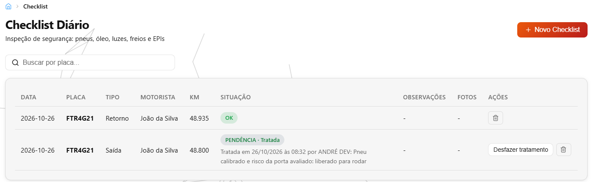
Frota → Relatórios: a tela diz qual período está valendo e soma tudo numa linha Total, igual à planilha. As multas passaram a contar pela data da infração (antes, o custo de outubro somava multas de qualquer ano), e a máquina aparece com as horas e o consumo em litros por hora.
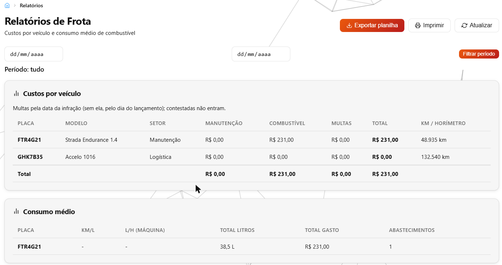
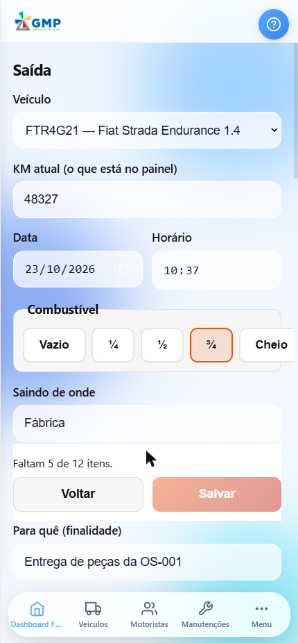
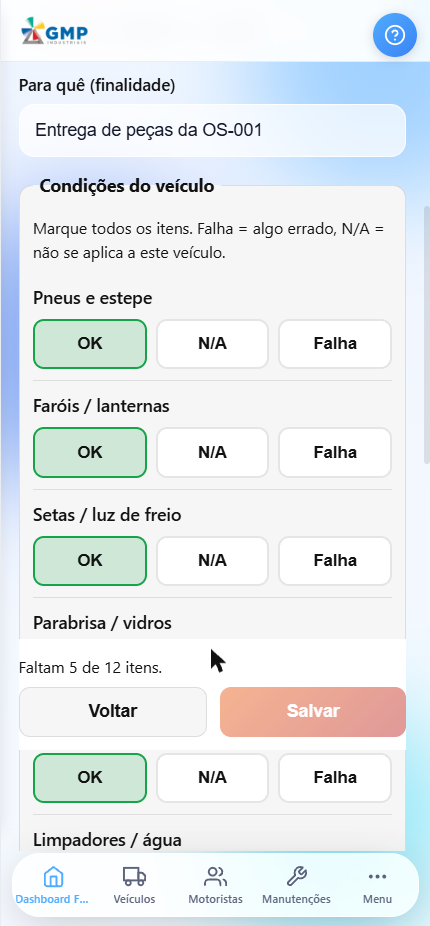
O que foi feito por baixo — e por que importa
Parte do trabalho não muda a aparência das telas: é o “motor” que faz as contas e guarda as informações. Quando ele erra, o erro aparece depois, em forma de data errada, proposta diferente da combinada ou dado na mão de quem não devia. Esta semana, no motor:
Datas e horas certas depois das 21h, em todo o sistema
O problema: o que era feito depois das 21h aparecia com a data do dia seguinte. Uma mensagem das 22h30 no Chat mostrava a data de amanhã; uma movimentação das 22h30 aparecia como 01h30 do outro dia e saía do filtro do dia certo; a OS prevista para hoje já aparecia como vencida; o PDF da OS imprimia as datas na véspera; e o painel da produção, depois das 21h, contava a produção pelo dia de amanhã.
O que foi feito: datas e horas passaram a seguir o relógio de Brasília em quase todas as telas e relatórios: Chat, Atividades, Propostas, Ordens de Serviço, Tarefas, Aprovações, Compras, Financeiro, Frotas, Fábrica e Almoxarifado, inclusive alertas, vencimentos, validades e os nomes dos arquivos exportados.
O que isso evita: OS cobrada como atrasada antes da hora, relatório do dia com lançamentos faltando e prazo contado com um dia a mais ou a menos.
A proposta guardada é a proposta que você vê
O problema: numa proposta com duas bombas iguais (TAG-A e TAG-B), tirar a primeira e salvar fazia a que ficou mostrar TAG-A. Uma proposta de 5 itens podia ser “criada” com 4, se um falhasse no meio; a cópia de uma proposta grande podia sair com parte dos itens.
O que foi feito: cada item passou a ser reconhecido por ele mesmo, e não pela posição na lista. Criar, salvar e copiar só dizem “pronto” depois de guardar todos os itens e cláusulas; se algo falha, nada fica pela metade e a tela diz para tentar de novo. O preview editável passou a avisar quando um campo não foi guardado.
O que isso evita: mandar ao cliente uma proposta com o item, a tag ou a cláusula errada.
Cada pessoa vê só os dados da sua área
O problema: por fora das telas, um usuário só do Almoxarifado conseguia ler o painel do Comercial e relatórios com telefone e e-mail de clientes. A busca do topo mostrava clientes e propostas a quem não podia abri-los, o histórico do almoxarifado mostrava a todos quem recebeu qual EPI, e qualquer um recebia o nome e o e-mail dos aprovadores de valor.
O que foi feito: cada parte do sistema passou a exigir o mesmo acesso que a tela dela já exigia: propostas, clientes, projetos, oportunidades, custos de viagem, produtos e o painel do Comercial. Os dados de pessoas (quem recebeu EPI, quem está com qual ferramenta, quem aprova) ficam só com quem cuida disso. A busca do topo diz por que não busca para quem não tem o Comercial.
O que isso evita: dado de cliente e de colaborador circulando para quem não precisa dele.
A lista mostra o filtro que você escolheu
O problema: ao trocar o filtro rápido (procurar “bomba” e logo depois “válvula”), a resposta mais lenta chegava por último e a lista mostrava bombas debaixo da palavra “válvula”. Buscar “são” na lista de clientes não achava nada, porque o cadastro grava “SÃO”. O filtro Segmento dos Clientes e o filtro de tipo dos Custos de viagem não filtravam.
O que foi feito: as listas da Fábrica, do Almoxarifado e do Comercial passaram a mostrar só a resposta do último pedido. As buscas acham com e sem acento, maiúscula ou minúscula, e os filtros que não funcionavam voltaram a filtrar.
O que isso evita: tomar decisão olhando uma lista que não corresponde ao que está escrito no filtro.
Documentos impressos sem texto cortado
O problema: em PDFs como o da ficha de EPI, do termo de ferramenta, da remessa a terceiros, da posição do cliente e nas etiquetas, nome comprido saía cortado (“Primeira entreg”), passava da borda da folha ou ficava por cima da coluna do lado. Na etiqueta, o código escrevia por cima do nome.
O que foi feito: o texto quebra em linhas dentro da coluna e nada se perde. Na remessa, toda página nova diz de qual remessa é e repete o cabeçalho da tabela, e a assinatura não vai sozinha para outra folha.
O que isso evita: documento assinado ou entregue ao fornecedor com informação faltando.
Além disso: abrir um custo de viagem para editar não troca mais os valores guardados; a localização do cliente fica guardada no cadastro, sem consultar o mapa a cada vez; as Reservas mostram o cliente pelo nome e a OS pelo número; e a cesta de requisição dos módulos de escritório voltou a enviar.
Para onde foi o tempo
Cerca de 88 horas de desenvolvimento nesta semana.
Tempo por atividade
| Atividade | Horas |
|---|---|
| Datas e horas certas depois das 21h, em todo o sistema | 20 h |
| Cada pessoa vê só os dados da sua área | 16 h |
| Listas, buscas e filtros; custos de viagem e cadastro de clientes | 11 h |
| Propostas: o que se vê é o que fica guardado | 10 h |
| Entrega de EPI e termo de ferramenta com assinatura, e documentos impressos sem corte | 7 h |
| Compra e material ligados a uma OS, e fornecedor novo pelo F2 | 7 h |
| Fila de separação, aviso de retirada parada e validade do lote | 6 h |
| Ferramentas: editar, manutenção e baixa | 2 h |
| Frota: portal do motorista, perfis, km e horímetro, relatórios, fotos e pendências | 7 h |
| Relatórios para a empresa | 2 h |
| Total | 88 h |
Mexer nas telas foi a parte rápida, mesmo com tudo o que apareceu de novo. A maior parte do tempo foi para as conferências automáticas: robôs que repetem centenas de situações a cada mudança — uma mensagem enviada às 22h30, uma assinatura alterada depois, duas pessoas mexendo no mesmo material ao mesmo tempo, um usuário tentando ler o que não é da área dele — para que o que já funciona não quebre escondido. Esta semana mexeu em datas do sistema inteiro, em assinatura com valor legal e em quem pode ver o quê, onde um erro custa caro e aparece tarde. O resto foi planejar cada mudança e atualizar os manuais de uso.
As horas são estimadas pelo registro do trabalho salvo ao longo da semana. Pesquisa, conversas e testes feitos à mão não entram — o número real é maior.
Quer conferir?
- Abra Almoxarifado → Entrega de EPI → Nova entrega, escolha um colaborador com matrícula e um EPI com CA, assine no quadro, toque Confirmar assinatura, digite a matrícula e toque Registrar entrega. Depois abra Ficha por colaborador e toque Gerar PDF.
- Abra Almoxarifado → Ferramentas, toque Emprestar numa ferramenta disponível e veja o termo e o quadro de assinatura. Numa ferramenta em manutenção, conclua a manutenção e veja as opções de destino.
- Abra Almoxarifado → Fila de separação: cada item diz “Pegar em …”. Toque Imprimir lista de coleta numa requisição.
- Abra Almoxarifado → Movimentações, escolha Entrada, preencha o Lote e veja aparecer Validade do lote.
- Abra Compras → Pedidos de Compra → Novo Pedido: veja o campo OS e aperte F2 para abrir a ficha de fornecedor por cima.
- No celular, abra Frota → Portal do motorista e veja o formulário de saída com os 12 itens da inspeção.
- Abra Frota → Perfis de acesso e veja o perfil de cada pessoa. Depois, em Frota → Checklist Diário, toque Tratar pendência num registro com pendência, e em Frota → Relatórios escolha um período e veja a linha Total.